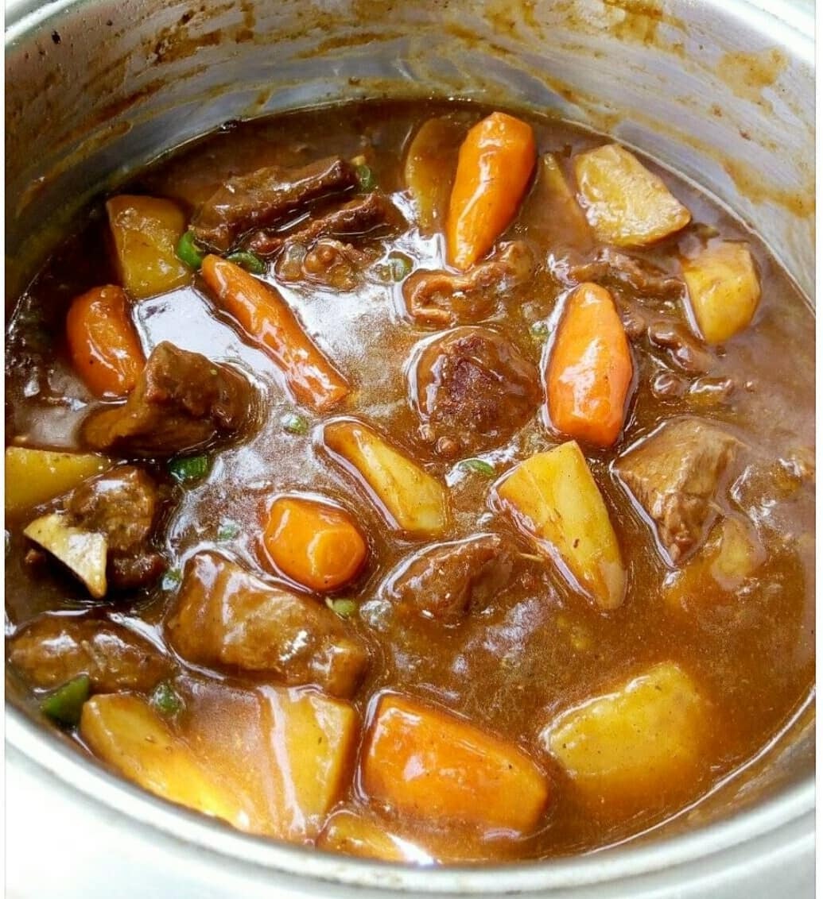

What I love to cook
Zambian Beef Stew

Beef-Stew
Here is a simple recipe on how to cook beef stew. It can be enjoyed with
any starch such as nshima, rice, pasta and potatoes.
Ingredients
- 1/2 kg beef
- 2 potatoes, chopped
- 1 onion chopped
- 1 tomato chopped
- 2 carrots
- 2 tbsp. cooking oil
- 1 tbsps. Plain flour
- 1 tbsps. tomato paste (optional)
- 2 beef stock cubes, crumbled
- Seasoning spices of your choice
How to cook Beef Stew
- Cut your beef into pieces, wash and add some salt
- Add 2 tablespoons of cooking oil in a saucepan/pot and heat
- Add the beef pieces one by one
-
Put the chopped onion and seasoning in the pot and stir for about 3
minutes
- Add the tomatoes and tomato paste, stir well until cooked
- Add the beef and spices with hot water and cook for about 45
- minutes to an hour so the meat is tender
-
Add in carrots and potatoes as well Then stir in 1 tablespoon of plain
flour paste and 2 crumbled beef stock cubes.
- Cook until the potatoes are cooked and bring to a gentle simmer
- The beef stew should have a thick gravy by now Ready to serve